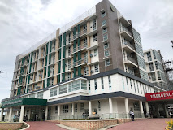
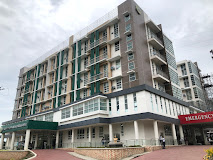

Here are some Famous hospitals that willing to service you
Bachelor of Science in Mechatronics
Computer programming or coding is the composition of sequences of instructions, called programs, that computers can follow to perform tasks. obotic systems can be defined as systems that provide intelligent services and information by interacting with their environment, including human beings, via the use of various sensors, actuators and human interfaces
Electronics engineers analyze the requirements and costs of electrical systems. Electrical engineers design, develop, test, and supervise the manufacture of electrical equipment, such as electric motors, radar and navigation systems, communications systems, or power generation equipment.
What is Mechanical Engineering? One of the most diverse and versatile engineering fields, mechanical engineering is the study of objects and systems in motion. As such, the field of mechanical engineering touches virtually every aspect of modern life, including the human body, a highly complex machine.